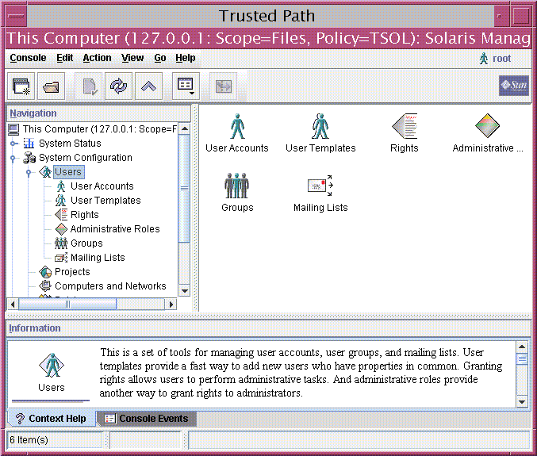
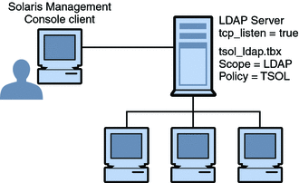

Solaris Trusted Extensions Administrator's Procedures
|
|||
|
Part I Initial Configuration of Trusted Extensions 1. Security Planning for Trusted Extensions 2. Configuration Roadmap for Trusted Extensions 3. Adding Solaris Trusted Extensions Software to the Solaris OS (Tasks) 4. Configuring Trusted Extensions (Tasks) 5. Configuring LDAP for Trusted Extensions (Tasks) 6. Configuring a Headless System With Trusted Extensions (Tasks) Part II Administration of Trusted Extensions 7. Trusted Extensions Administration Concepts 8. Trusted Extensions Administration Tools Administration Tools for Trusted Extensions Label Builder in Trusted Extensions Command Line Tools in Trusted Extensions Remote Administration in Trusted Extensions 9. Getting Started as a Trusted Extensions Administrator (Tasks) 10. Security Requirements on a Trusted Extensions System (Overview) 11. Administering Security Requirements in Trusted Extensions (Tasks) 12. Users, Rights, and Roles in Trusted Extensions (Overview) 13. Managing Users, Rights, and Roles in Trusted Extensions (Tasks) 14. Remote Administration in Trusted Extensions (Tasks) 15. Trusted Extensions and LDAP (Overview) 16. Managing Zones in Trusted Extensions (Tasks) 17. Managing and Mounting Files in Trusted Extensions (Tasks) 18. Trusted Networking (Overview) 19. Managing Networks in Trusted Extensions (Tasks) 20. Multilevel Mail in Trusted Extensions (Overview) 21. Managing Labeled Printing (Tasks) 22. Devices in Trusted Extensions (Overview) 23. Managing Devices for Trusted Extensions (Tasks) 24. Trusted Extensions Auditing (Overview) 25. Software Management in Trusted Extensions (Tasks) Creating and Managing a Security Policy Site Security Policy and Trusted Extensions Computer Security Recommendations Physical Security Recommendations Personnel Security Recommendations Additional Security References B. Using CDE Actions to Install Zones in Trusted Extensions Associating Network Interfaces With Zones by Using CDE Actions (Task Map) Preparing to Create Zones by Using CDE Actions (Task Map) Creating Labeled Zones by Using CDE Actions (Task Map) C. Configuration Checklist for Trusted Extensions Checklist for Configuring Trusted Extensions D. Quick Reference to Trusted Extensions Administration Administrative Interfaces in Trusted Extensions Solaris Interfaces Extended by Trusted Extensions Tighter Security Defaults in Trusted Extensions Limited Options in Trusted Extensions E. List of Trusted Extensions Man Pages Trusted Extensions Man Pages in Alphabetical Order |
Solaris Management Console ToolsThe Solaris Management Console provides access to toolboxes of GUI-based administration tools. These tools enable you to edit items in various configuration databases. In Trusted Extensions, the Solaris Management Console is the administrative interface for users, roles, and the trusted network databases. Trusted Extensions extends the Solaris Management Console:
Solaris Management Console tools are collected into toolboxes according to scope and security policy. To administer Trusted Extensions, Trusted Extensions provides toolboxes whose Policy=TSOL. You can access tools according to scope, that is, according to naming service. The available scopes are local host and LDAP. The Solaris Management Console is shown in the following figure. A Scope=Files Trusted Extensions toolbox is loaded, and the Users tool set is open. Figure 8-3 Typical Trusted Extensions Toolbox in the Solaris Management ConsoleTrusted Extensions Tools in the Solaris Management ConsoleTrusted Extensions adds configurable security attributes to three tools:
Trusted Extensions adds two tools to the Computers and Networks tool set:
Figure 8-4 shows the Files toolbox with the Computers and Networks tool set highlighted. The Trusted Extensions tools appear below the tool set. Figure 8-4 Computers and Networks Tool Set in the Solaris Management Console
Security Templates ToolA security template describes a set of security attributes that can be assigned to a group of hosts. The Security Templates tool enables you to conveniently assign a specific combination of security attributes to a group of hosts. These attributes control how data is packaged, transmitted, and interpreted. Hosts that are assigned to a template have identical security settings. The hosts are defined in the Computers tool. The security attributes of the hosts are assigned in the Security Templates tool. The Modify Template dialog box contains two tabs:
Trusted networking and security templates are explained in more detail in Chapter 18, Trusted Networking (Overview). Trusted Network Zones ToolThe Trusted Network Zones tool identifies the zones on your system. Initially, the global zone is listed. When you add zones and their labels, the zone names display in the pane. Zone creation usually occurs during system configuration. Label assignment, multilevel port configuration, and label policy is configured in this tool. For details, see Chapter 16, Managing Zones in Trusted Extensions (Tasks). Client-Server Communication With the Solaris Management ConsoleTypically, a Solaris Management Console client administers systems remotely. On a network that uses LDAP as a naming service, a Solaris Management Console client connects to the Solaris Management Console server that runs on the LDAP server. The following figure shows this configuration. Figure 8-5 Solaris Management Console Client Using an LDAP Server to Administer the NetworkFigure 8-6 shows a network that is not configured with an LDAP server. The administrator configured each remote system with a Solaris Management Console server. Figure 8-6 Solaris Management Console Client Administering Individual Remote Systems on a Network
Solaris Management Console DocumentationThe main source of documentation for the Solaris Management Console is its online help. Context-sensitive help is tied to the currently selected feature and is displayed in the information pane. Expanded help topics are available from the Help menu or by clicking links in the context-sensitive help. Further information is provided in Chapter 2, Working With the Solaris Management Console (Tasks), in System Administration Guide: Basic Administration. Also see Using the Solaris Management Tools With RBAC (Task Map) in System Administration Guide: Basic Administration. |
||
|